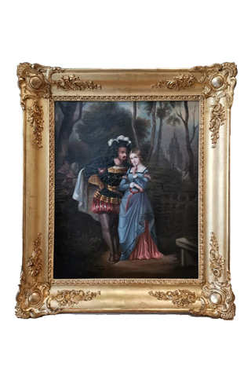
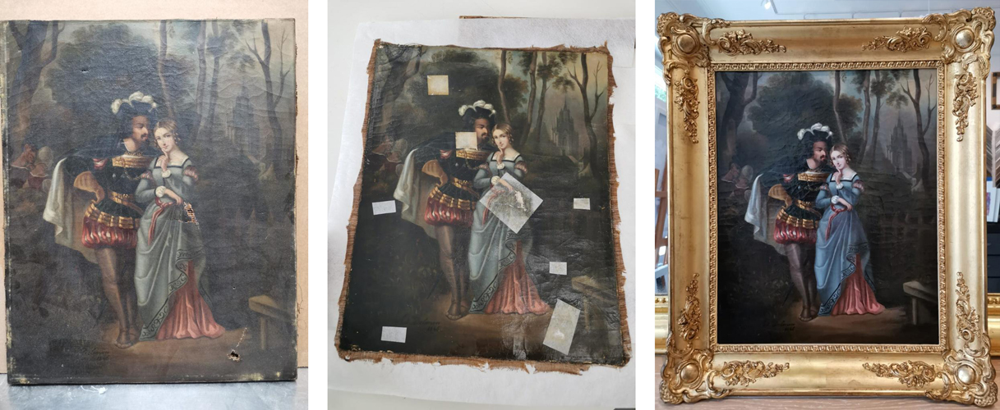
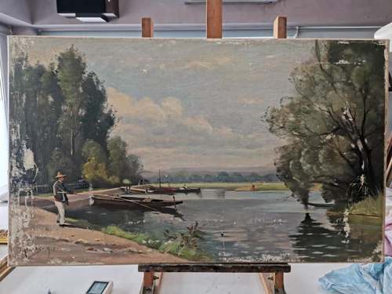
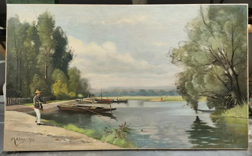

Redonnez vie à vos œuvres d'art
Le temps laisse son empreinte : vernis jaunis, salissures, poussière, petites déchirures ou altérations peuvent ternir la beauté d'un tableau ancien.

Diagnostic sur place
Nous étudions chaque œuvre avant toute intervention.
Restauration tableaux
Nettoyage, consolidation et harmonisation avec agrément monuments historiques.
Dorure à la feuille
Cadres, miroirs et objets dorés selon les techniques traditionnelles.
La préservation de votre patrimoine
Chez Art'Cadres, nous vous accompagnons dans la préservation de votre patrimoine artistique grâce à des prestations de nettoyage et de restauration réalisées avec le plus grand soin, en collaboration avec Sylvie Schied, restauratrice agréée monuments historiques.
Chaque œuvre est étudiée avant toute intervention afin de lui redonner son éclat tout en respectant son histoire, ses matériaux et l'intention de l'artiste. Un tableau est bien plus qu'un objet décoratif : c'est un souvenir de famille, un héritage ou une pièce de collection qui mérite d'être préservée pour les générations futures.




N'hésitez pas à nous apporter votre tableau pour un diagnostic et un devis personnalisés.